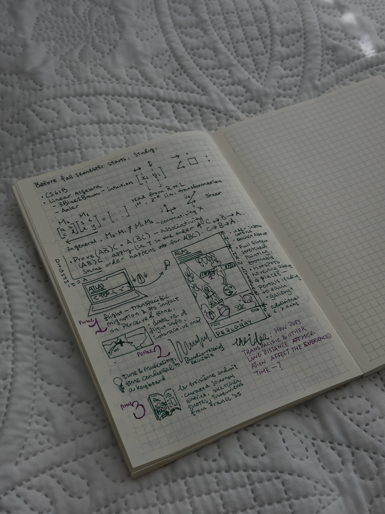

Is It Time?
a foreword to the digital exhibition ATLAS. By Jacqueline Song
Long flights — especially those that cross oceans — mean more to me than a stage of transportation. On these flights, I often catch myself thinking: thinking of where I have just left, where I am going, and when I will come back — if back is even the right word. I think of my past and my future. Presence becomes an abstraction.
When you are forty thousand feet above the earth, the past and future begin to resemble shelves of records, loosely and thoughtlessly arranged: Aa to Zz, 00:00 to somewhere between the beginning and infinity. You can be anywhere along that spectrum. Time itself feels suspended. Depending on where you land in relation to where you departed, you may even return to yesterday and live the day again.
This is my imperfect attempt to describe what migration feels like: specifically, how migration transforms time as it is experienced by the migrant. Words, however, can only do so much.
For my final project, I want to bring together different materials and ways of knowing to capture, articulate, and investigate this experience of time.
The foundation of the project will be a painting I created around the same theme. Rather than treating the painting as a single object to be observed, I will turn it into an interactive reception point. Viewers will be able to zoom into the image and enter different “galleries” through symbols embedded within it. Each gallery will approach migration, time, and belonging through a different medium.
The portal to the first gallery rests on the plane wing at the bottom left of the painting. Inside, an interactive cartography will trace flights that I have taken and that have been significant to my life. Maps, routes, distances, time zones, departure and arrival times, daylight, and other flight data will provide one documentary way of understanding migration. However, this supposedly objective information will be placed alongside memories and reflections associated with each journey. The gallery will therefore consider the difference between time as recorded by clocks and coordinates and time as experienced by a moving body.


The second portal is located on the cliff at the right side of the painting. It depicts my favorite place from the summer I studied abroad in France — le troisième endroit, or “the third place”: a third vector outside the plane formed by my home country and California. This gallery will include extracts from my journal, sketches, photographs, and possibly interviews or conversations from that period. These materials offer a more fragmentary and situated form of knowledge. They do not produce a complete or neutral account of France; instead, they document how a temporary place was perceived, remembered, and made meaningful by one person at a particular moment.
The third gallery begins on the piano keys. It will take the form of an audio-reactive visual environment exploring how music is experienced through time. For most of my life, the piano has been my most trusted confidant. Wherever there is a piano, I can find a small piece of home, regardless of time or place. Unlike a flight record or photograph, music cannot be understood all at once. It unfolds through duration, repetition, anticipation, and memory. The listener constantly holds the note that has just disappeared while waiting for the next one to arrive.
The project will therefore incorporate several ways of knowing: quantitative data, geographic mapping, personal testimony, memory, painting, photography, drawing, sound, and embodied experience. Traditional documentary practices often attempt to stabilize their subjects through dates, locations, images, records, and chronological narratives. These materials are valuable, and I will use many of them, but they cannot fully document an experience defined by temporal confusion, emotional contradiction, and unstable ideas of home.
Rather than constructing one authoritative record of migration, I want the project to move between objective and subjective forms of evidence. The map may state exactly where a flight traveled, but not whether the person aboard felt that she was leaving or returning. A timestamp may identify when she arrived, but not whether her body, memory, or sense of self had arrived with her. By combining documentary records with visual, sonic, and personal materials, I hope to challenge the assumption that migration can be represented as a straightforward movement from one fixed point to another. Instead, I want to present it as a condition in which multiple places, times, and versions of the self remain present at once.